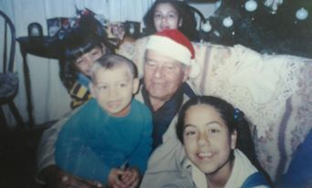
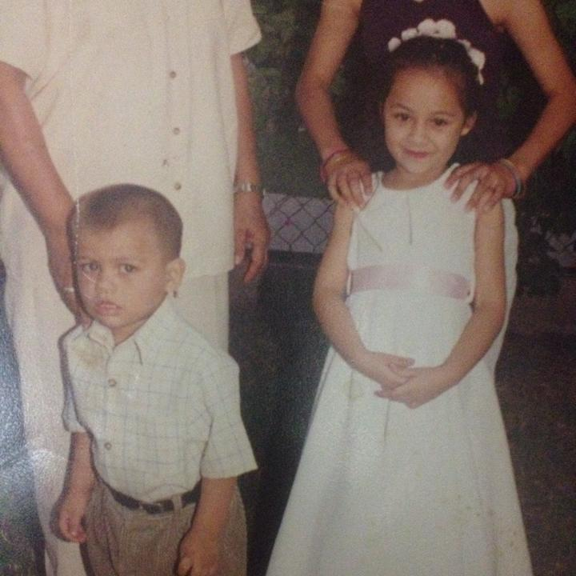

INFANCIA

Este soy yo cuando tenia aproximadamente 1 año, es la foto mas antigua que tengo asi que comenzaremos mi infancia desde este punto.
Enrealidad no tengo recuerdos de este entonces, no me gustaria mentirte y decir en donde fue tomada esta foto. Ya que no cuento con el conocimiento previo.

Uno de mis recuerdos mas ambiguos es mi primer viaje, fue a EUA con practicamente toda mi familia, desde tios hasta abuela, mi abuelo no acostumbra viajar asi que el no asistio, en ese viaje recorrimos gran parte de EUA, una de mis partes favoritas fue Big Bear California, fue mi primer experiencia nevando, no tengo foto de dicho lugar, pero recuerdo que estuvimos en una cabaña por 2 dias, fue un gran viaje tambien tuve la oportunidad de ver osos mi animal favorito. En las fotos anteriores salgo en Las Vegas Nevada, donde tuve la oportunidad de ver el show de los barcos, el Circus Circus. Mas mi visita a Disneyland.

Mi infancia la mayor parte de lo que recuerdo son de mis 3 años en adelante, en la imagen anteriormente mostrada, soy yo con mi abuelo, mis primas y mi hermana. En navidad los nombres de mis primas es johana, sangie y mi hermana ivonne y mi abuelo Wilfrido. Antes acostumbramos reuniros toda la familia reunirnos en navidad, por desgracia no tengo fotos de toda mi familia junta, pero en la foto pasada salen alguno de ellos, eran unos tiempos muy agradables desde mi punto de vista, el 24 por la noche mi abuelo nos daba dinero para comprar cohetes y mi abuela nos daba una casuela vieja, acostumbramos poner los cohetes bajo esa casuela por que nos gustaba ver como salia volando mas el sonido que hacia.

En este momento de mi infancia fue una fiesta de cumpleaños numero 6 que me festejaron junto a mi hermana sayra. Fue algo emocionante fue mi primer cumpleaños con fiesta en grande, recuerdo que me regalaron una figura de la mole que tengo aun actualmente uno de mis juguetes preferidos. La fiesta se conmemoro en la sala de fiesta payasitos, con una tematica de woody, nada que ver ami nisiquiera me gustaba woody no se que estaba pensando mi madre. Mas agradezco el momento que pase con mi familia. Me diverti mucho a quien engaño, fue una experiencia que sin duda me gustaria repetir mas actualmente las fiestas de cumplaños estan repletas de bebidas alcoholicas y cigarros, es algo triste mas son lindos los recuerdos que me quedan.